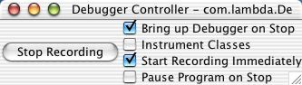
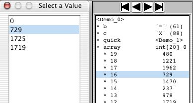
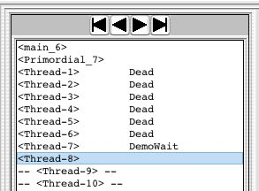
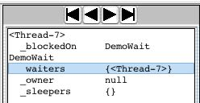

Omniscient Debugger User Manual
Omniscient debugging is the concept of debugging by retaining state changes
and "navigating" backwards in time to find the problem. The ODB is a
proof-of-concept implementation written in Java. It is neither optimized nor
integrated. None-the-less, I believe you will find it to be the most
effective debugger you have ever used.

Figure 1
The ODB is based on the idea of collecting "time stamps" at each point of
interest in a program and then allowing the programmer to use those time
stamps to explore the history of that program run. "Interesting" points
include: setting a variable value (local, instance, array element, static),
making a method call, throwing/catching an exception, and creating a new
object. The debugger inserts code into the class files to collect these
stamps. (The instrumentation is done using the wonderful BCEL package which
is available from www.Jakarta.Apache.org/bcel.) When the program runs, time
stamps will be recorded.
The ODB does not require any preprocessing, or any special repository.
There are no limitations on the program being debugged. It
is not even absolutely necessary to have the source code available. After
installing (see below), the programmer runs the debugger by calling:
% debug TargetProgram arg1 arg2 arg3
The debugger will display a little control window and start the program. The
main debugger window will pop up when the program calls exit() or when the
programmer pushes the "Stop Recording" button in the control window. The
programmer will then be able to navigate through the time stamps to find
interesting events.

Once the debugger main window is up, all recording will be turned off, even
if the program is still running. You may resume recording using the control
window.
Data Display Formats
The ODB needs a print
string, so it supplies its own format showing the class name and an index
number: <MyObject_75>, chopping off the package. You may add
an additional string to it: <MyObject_75 square> (see defaults file).
Class objects are displayed as just the class name (e.g., Person ). Boolean
values, numbers, and characters are displayed as expected: true, false,
123, 45.678, 'X' (88). Bytes are also displayed like characters
with both the ASCII character and the decimal value in parenthesis.
Long names and strings (more than 20 characters) will be elided and printed as:
<TestLongName..0> in the trace pane. In the objects pane more
room is provided (500 characters). Very long strings and large objects may be printed out to
the terminal via the menu item Objects->Print.
Method traces are displayed with the object (or class object for static methods),
followed by the method name, the first three arguments, and finally an
arrow and the return value. Methods that haven't returned just show
****. Methods that throw (or propagate) an exception show ****<Exception>.
They are indented appropriately, hence in figure 1, sort()
called average() once, new() twice, then start(), and finally sort()
recursively. The recursive call to sort()
called average(), etc.
Returns from methods are displayed on separate lines as sort -> void.
If the return line would be right after the call line, it will not be
displayed. If the program catches an exception from more than one method
call deep, the display will appear jagged because there won't be any intervening
"return lines".
Constructors will be shown like static methods (MyObject.new() -> <MyObject_1>),
as will super methods.
The Display Panes
The ODB attempts to show all the data of interest on the screen at
the same time. Popup dialogues are only used for finding source files and selecting values, which
are rarely done. The panes are all updated to display the same time
stamp.
Threads Pane
Threads are displayed in the format <Thread-3>, where "Thread-3" is
whatever is returned by getName(). If the currently selected time is
previous to the creation of the thread (before the thread's first time
stamp), it is shown as -- <Thread-3> --, and as <Thread-3> Dead if after
the thread has exited (after the last time stamp for a thread whose
isAlive() method returns false). If the thread is blocked, waiting for a
lock or in a call to wait() or join(), it is shown as <Thread-10> <MyObj_2>.
Adding the thread to the objects pane will show this as a
pseudo-instance variable _blockedOn.
Stack Pane
All methods on the stack are displayed here. Single-clicking on a line will
update the Code pane, the arguments, and the local variables for that stack
pane. The current time stamp will not be changed. Pushing any button will
act on the actual time, not what is displayed in the code pane. (It's not
clear what is most "intuitive" here.) The menu command Code->Goto Stack Frame
will revert to that time stamp.
Locals Pane
All arguments and local variables will be displayed here. If
the program has been compiled without the -g flag, local variable names
will displayed as var1, etc.
'this' Pane
This pane displays the current 'this' object (or the class object for
static methods).
Trace Pane
For each thread, this shows the trace of all method calls
that were made. Only three arguments are shown. Only ten are recorded.
Code Pane
This displays the current line of code. The buttons all move
forwards or backwards starting from this line. The two exceptions are:
when a higher stack frame has been selected (see Stack Pane) and when a
time stamp occurs in a source file that can't be found, in which case the code pane
will be empty.
I/O Pane
This shows the all the lines written by System.out.println() and System.err.println(). (Obviously,
only calls from instrumented code.) If the line is preceded by "--", that
indicates that the current time is previous to the time that line was
written. (Eventually this pane will show calls to print(), write(), etc.
going to any I/O stream.)
Objects Pane
This shows whatever objects the user has copied here via double-clicking on
objects in other windows. Double-clicking on an instance variable will add
that object to the pane. Double-clicking on an object in this pane will
"close up" that object, hiding all its instance variables. Double-clicking
a second time will open it back up. Individual instance variables may also
be removed selectively (see Objects->Remove and Objects->Retain Only).
Double-clicking on an instance variable will expand the value
of that instance variable in-place (like the array int[20]_0 in
figure 1). If the value is a primitive or is an object with no visible instance
variables, nothing will happen. Pushing the Previous Value button, etc.
will advance to the next value of the instance variable, not the
next value of the instance variable's instance variable. For example, the
previous value of array in figure 1 is null, so
the array will disappear if you go there. If you select an
instance variable's instance variable, the commands will work on that, which
could cause it to disappear if the instance variable also changed value.
(This recursive stuff is a little confusing to explain. Just try it.)
Values which have not yet been
set (e.g., instance variables of objects before they have been created) will
be displayed as "--". Variables which changed values from the previously
selected time stamp will be displayed with a leading "*".
Currently only a single level of recursion is supported. Double-clicking on an
instance variable's instance variable will copy that
instance variable to the top level of the pane. An instance variable's value may also be
copied to the top level via Objects->Add Instance Variable.
The Objects menu allows you to display class object of the selected object (and the static
variables thereof) Objects->Add Class.
Navigation
Navigation has never been a issue in traditional debuggers because there
wasn't much to think about. You pushed Continue, the program resumed
and ran until it hit the next breakpoint, and that was it. We need to be
a bit more formal because there are so many more ways to get from here
to there and back again.
The ODB provides a variety of methods for navigating through the program
run. They are all aimed at making it as simple as possible for the programmer
to get to "interesting" points in the program and see what state it was in.
The ODB implements what I believe are the most "obvious" methods, with plenty
of room for adding others.
The primary modes of navigation are:
o Selecting a line in the trace window, which will revert the debugger to
the time of the first time stamp recorded in that method. If that method
was not instrumented, then the debugger will revert to the line it was
called on.
You may request the debugger to always to the calling line by turning
Trace->Go to first line in method off.
o Selecting a line in the code window, which will revert the debugger to a
time stamp on that line (see below).
o Pushing one of the buttons, which will revert the debugger to a time stamp
depending on the currently selected object or line in that pane. (See Navigation
Buttons below.)
o Selecting a line in the Stack pane, which will not change the current time
stamp, but will show you where methods in the stack were called from
(reverting the code pane) and the values of the local variables. (See Stack Pane.)
o Selecting a thread, which will revert to the nearest time stamp in that
thread, earlier than the current time preferred. (All instrumentation methods
are synchronized, so time stamps are strictly sequential.)
o Selecting a line in the I/O window, which will revert to the time when the
newly selected line was printed.
The choice of which time stamp on a line in the code pane to select may be
controlled by a set of options in the Code menu. The normal direction is to
go backwards in time if the newly selected line is above the previously
selected line, and forwards if not. Going forwards, you will select the
first TS (of a contiguous set, e.g., call/return) on a line, going
backwards, you will select the last. Normally the time stamp has to be in
the current thread. You may also restrict the choice to being in the same
method call. (The best behavior here is hard to determine. I've played with
lots of ideas.)
Navigation Buttons
The buttons work as uniformly as possible for the different panes. The four
arrow buttons revert to the first, previous, next, and last time for
selected object in that pane. All of the buttons have tooltip messages.
You may bring up a list of all the values a variable ever had and
select one of them. The commands Object->Select IV Value selects a value
for an instance variable, and Object->Select Local Value
selects a value from a local variable. The ODB will revert to the time
when that variable first took that value.

Now for the Details
If you are just starting, skip down to "Installing the Debugger" and spend some
time playing with the demo.
Minibuffer
Modeled after EMACS, extended commands (such as Evaluate Expression and
Search) are displayed here, as are messages to the programmer.
Searches
You may do an incremental text search through
the trace pane. <Ctrl-S> will start the search and give focus to the
minibuffer. Typing characters will extend the search string. Another
<Ctrl-S> will advance to the next match. <Ctrl-R> will reverse the search.
<Return> will end the search. <Ctrl-G> will abort any command.
The search is case-insensitive and looks for two things: the exact characters
on the screen (including the ".." for very long names), and the characters
in the individual objects (i.e., the complete name for long names and
strings). TABs are typed as themselves (not <Ctrl-I>, not "\t"), newline
characters are entered as "\n". In the middle of a search, double-clicking
on an object will add that object to the search string.
"Event" searches are provide via the "Fget" commands (<Ctrl-F>). They are
executed as incremental searches based on the pattern typed in (another
<Ctrl-F> will find the next match and <Ctrl-R>
will search in the reverse direction). A typical pattern would be (note the
"Prolog style"):
port = call & to = THIS & arg0 = <MyObj_5>
which will search for method calls ("port = call") whose
"this" object ("to = THIS") will be assigned to the variable
THIS (NB: a sybmol in uppercase means it's a variable) and whose first argument
("arg0") is <MyObj_5>.
Port must be one of: call, return, enter (first line in a
method), exit (last line in a method), civ
(change instance variable), clv (change local variable),
chgArray (change array element).
o All ports define "to" (this object), "toc" (this object
class), "mn" (method name), "thr" (thread), and "pN" (parameter 0-9).
o "Calls" also define "argN" (argument 0-9) and "cmn" (call method name).
o "Returns" define "rv" (return value).
o "Changes" define "nv" (new value).
Strings are entered with '"' and class objects are prefixed with
a '#'. All objects may be compared with '=' and '!='.
Integer values may be compared with '>' and '<'.
Hence this pattern:
port = enter & mn = "sort" & toc = #fr.insa.Thing & p0 > 3
will match the first line in any method named "sort" in the
class fr.insa.Thing whose first parameter is an int greater
than 3.
There are two commands on the Trace menu which will create queries
for you, matching either the current trace line (i.e., the current method
call) or the current source line. These will be stored as the
"previous" FGET query so that typing <Ctrl-F><Ctrl-F> will show them.
Typing <Ctrl-T> in the midst of an FGET query will display the total
number of matches in the entire run of the program (starting with the
currently selected time).
Marking Points of Interest
The ODB maintains a ring of "marks" for time stamps. You may add a mark to the
ring with <Ctrl-SPACE>. You may then revert to that mark with <Ctrl-X>. The
ring is circular, and if there is more than one mark, <Ctrl-X> will cycle through
the ring.
Locks and Wait Sets
When a thread blocks, waiting for a lock or calls wait() , the object on which it
blocks will be displayed next to it in the Threads Pane (e.g.,
<Thread-7>
is blocked on the class object DemoWait
below). A pseudo-instance variable _blockedOn
will be added to the thread and shown in the object pane if the thread is
displayed there. Three pseudo-instance variable ( _waiters, _owner,
_sleepers) will be added to the object. If a thread blocks in
uninstrumented code, the ODB will not notice.


Filters
If you have a large number of trace lines which are not particularly
interesting, you may filter them out using the Filter menu options. You may
filter out individual methods (hiding them and their internals), filter out
method calls deeper than some limit, or filter in one method (hiding
everything else). And you may "unfilter" everything. You may save the
filters to the .debuggerDefaults file (see options) and the next time you
instrument those classes, those methods will neither be instrumented nor
recorded.
Probably the most useful filter option is to "filter in" a method, hiding
all method calls outside of the selected one.
All panes reflect the current time stamp (except when navigating using the
stack). The code lines are those defined by the compiler, so there may be
many time stamps on one line of code. Each method call generates two time
stamps -- one for the call, one for the return. If it's instrumented, the
method then also records the first line executed and the last line. If
return is not called directly, the Sun compiler assigns the implicit return instruction
to the first line of the method (kinda weird). This line:
t = first(tl.getNext());
generates five time stamps, two calls, two returns, and an assignment. Logic,
flow of control,
and operators generate no time stamps. This:
if ( ((a + 71) > (b * c)) || (this == that) ) break;
generates no time stamps.
Evaluating Expressions Interactively
Arbitrary method calls may be made at any time. You may revert the debugger
to any time you wish and then evaluate a method call using the current
values of the recorded objects. So if you revert to time 1234, when
<Demo_0>.array elements 16 and 17 are 454 and 123 respectively, calling
<Demo_0>.quick(16, 17) will sort those two. If you advance to time 1330,
when 16 and 17 are already 123 and 454, then sorting them won't change
anything.
In order to maintain some sense of consistancy, the methods will be executed
in a different "timeline". Basically, the current state will be copied into
a new timeline which is initialized with only one time stamp. The method
will then be run (with recording turned on and off automatically),
populating this new timeline. You can switch back and forth between the two
timelines freely. Further method calls will clear the secondary timeline
before running.
In the secondary timeline you may change the value of instance variables
before running. The commands are all on the main menus, with keyboard
accelerators. <Tab> will do an auto-complete on object and method
names. <Return> will execute the command (running the method or setting the
instance variable value).
These commands are the least robust part of the debugger. The interactive
"Evaluate Expression" only accepts four arguments. The arguments must be
object or class print strings (e.g., Demo, <Demo_0>), strings, integers,
true, false, or null. You cannot change the value of final variables. One
space is required after each "," and nowhere else. <Return> and <Tab> must
be typed at the end of the minibuffer. You can only change the values of
variables of type Object, int, and boolean. Lock states and wait sets cannot be
set, so their displays will be set to "unlocked" and "empty".
Garbage Collection
There is a limit to the number of time stamps that can be recorded. Each
simple time stamp takes three words (12 bytes on a 32-bit system) and each
method call/return takes about 25 words and another 25 for the JList to display
it.
And then your program probably needs to use some memory also.
The ODB looks at the value of the MEMORY environment variable (or
MaxTimeStamps in .debuggerDefaults) to determine
how much memory to devote to time stamps. Currently it allows a maximum
of MEMORY/200 time stamps. (You'll notice that the aliases default to
400MB, allowing 2m time stamps.) When that number is exceeded, the
ODB's "garbage collector" kicks in and throws away some of the early time
stamps.
The defaults are set on the command line by the aliases such as
this one (for debug):
java -Xms400100100 -Xmx400100100 -DMEMORY=400100100 -cp $HOME/Debugger/debugger.jar:$CLASSPATH $USER_FLAGS com.lambda.Debugger.Debugger
The flag -Xmx sets the maximum memory for the program, -Xms
sets the initial memory size. We want to avoid useless early JVM garbage collections,
so they are set to the same size. Depending on your program, you may wish to
increase these numbers while keeping the value of MEMORY low. This would give
your program more room of its own.
Of course these are not really garbage. So the ODB attempts to retain the
time stamps which are most likely to be interesting (object changes), while throwing away
those that aren't. In the first mode, the ODB throws away all time stamps
for local variables and method calls that are older than 50% of the entries.
If this is insufficent (less than 10% are collected), then the second mode
kicks in and entries for objects are also collected.
On each invocation, the collector will print out a line similar to this:
ODB: Collected 244783 out of 326382 stamps and 47268 TraceLines
Although very clever, it is not clear that the GC is actually useful. If you turn it
off, collection will simply stop when storage is filled up. (See the environment variable GC_OFF.)
Objective of the ODB
I originally wrote a paper describing this so that someone else would write
a proper debugger/IDE so that I could use it. Then I thought it would be
good if I could prove that this was actually useful. So I wrote a little
mock-up, which evolved into this full-fledged proof-of-concept. I claim that
the ODB is sufficient proof that the idea of "omniscient debugging" works
and works very well.
So, there are lots of guesses about what data would be most useful, how it
should be displayed, what navigation commands make sense, etc. Most of the
surrounding pieces of an IDE have already been done quite well by other
folks. So, for compilation, editing, class browsing, etc. I simply assume
that the ODB will be properly integrated into those bits which work best.
I wrote the ODB in Java because it was easy. Omniscient Debugging
could equally well be applied to C, C++, Eifel, etc.
Optimizations and Limitations
Other than any exceptions noted in the "bugs" section below,
the ODB shows data which is 100% correct and can be
confidently run on any Java 1.3 1.4, or 1.5 program. (ODB1.4 for
SDK 1.3 and 1.4, and ODB1.5 for SDK1.5.)
Unless there are bugs I don't know of (ha-ha).
If you don't need to get fancy, stop now. You'll probably never use the
stuff below.
Although it is possible to record absolutely everything, it is rather
expensive and not very useful. For classes which are trusted (such as the
JCF classes, library classes, and your own well-tested classes), it is
possible not to instrument them. Indeed, the default is to instrument and
record only those classes in the package of the main method. The debugged code will
run faster and the debugger will not be cluttered with uninteresting
data. There are some limitations...
The limitations include: any direct changes to an instance variable (e.g.,
obj.iv = value;) performed in non-instrumented code will not be recorded
(it's bad OOP practice to set instance variables directly anyway! You should be
using getters and setters.), calls from non-instrumented code (e.g., from
the event loop) back into instrumented code will look funny (the call chain
won't be visible. These "unparented" calls are marked in the trace pane with
"**" preceding the call.), calls to System.exit() in non-instrumented code
will exit the process.
You may clear the history and record new data from a live application (e.g.,
when debugging a button push), or restart the same. You may select a line in
the program and tell the debugger to turn recording on/off there. You may
select a line of output for the same purpose.
Objects which were created outside of instrumented code will not be
recognized until they are touched in instrumented code. The
actual creation time is thus not known and their instance variable values
will not be known. They will be marked with a "@" in the Objects Pane.
Some classes are just crying out for special, hand instrumentation. Vectors,
for example, really want to be displayed as if they were arrays which just
happen to be of the exact right size. This is done by replacing Vector with
MyVector during instrumentation.
Obviously, instrumenting classes which the ODB uses (e.g., Swing)
will not work. If you are working on such code, you will have to change the
package for the code you're working on. For example, to debug the ODB, a
complete copy of the source tree is made and the package
"com.lambda.Debugger" is replaced by "lambda.Debugger." I do the same thing
when debugging Swing itself.
Displaying very large objects is awkward. By default, objects with more than
1000 instance variables (i.e., arrays) will display only the first 1000, and
print (Objects>Print) only the first 10000.
Options
The ODB normally inserts instrumentation while loading classes via a
subclass of java.lang.ClassLoader.
This is done by default for classes in the package
of the main method. Thus, if you use Apache's crimson package it won't
be instrumented unless you specifically request it (see .debuggerDefaults).
It doesn't matter where the files are loaded from.
Normally the ODB will bring up the main debugger window as soon as the
target program's main thread returns or System.exit() is called from
instrumented code. (The exit() method gets replaced by a call to throw a
DebuggerExit exception.) Any other threads in the program will
be suspended on their next call to instrumented code.
For programs in packages, CLASSPATH must be set correctly (the aliases will
pick this up when they are run), so you must start the debugger from the
command line.
This is also true
for code from jar files--you must put the jar file in the CLASSPATH
and start the debugger from the command line. (Microsoft details are noted below.)
% setenv CLASSPATH /home/your_directory/your_code.jar
% debug com.your_company.CoolProgram arg1 arg2
All of the options below may be selected from the controller window if the
debugger is started with the DONT_START flag (use debugp). Once you figure out
what setting you want, it's more convenient to use the appropriate alias.
For programs that spawn new threads which continue to run after main()
returns (e.g., any windowing program), you should set the DONT_SHOW flag (run
the alias debugn ). Recording will continue until you push the Stop
Recording button.
You may set the PAUSED flag to start the program without starting recording.
For example, when there's a bug when pushing a button, you can setup the windows
without recording.
You may set both
flags from the command line or the controller window, allowing you to start, stop, and
restart recording. You may see some odd looking traces if the program is not
quiescent when you start and stop it.
You may request that certain methods not be instrumented or not be recorded,
by placing their class and method names into the .debuggerDefaults file in the current
directory.
For example, StringBuffer and StringWriter aren't be recorded by
default, thus ridding the trace pane of lines from code like this:
"Teach "+ n +"dogs new tricks!"
(which actually involves a new
StringBuffer, two appends, and a valueOf()
call). The methods not instrumented by default are: toString() and
valueOf(). Those not
recorded are: toString(), valueOf(),
and <cinit> (Class
constructors -- "initialize statics") and all StringBuffer
methods.
If you really want to record/instrument everything (hint: you don't!), you
may remove them from the defaults file. You may use the Filter menu to add methods
to it or edit it by hand (see Defaults File below).
You may instrument specific classes in different directories by hand:
% debugify MyObject1.class MyObject2.class ...
If you want to run the debugger and have it not instrument any files, you
may pass the DONT_INSTRUMENT flag. (Presumably you have
debugified some files by hand.) This may be done with the alias/bat file:
% debugdi MyProgram arg0 arg1...
If you start the debugger with no arguments or from a file manager, a file
chooser will pop up and allow you to select a program and set these options.
This method is rather limited. The program in question must be in the default
package.
Microsoft Windows
Everything works the same way as above, except that instead of aliases,
batch files are used. It is assumed that you will put the debugger in the
directory c:\Debugger and that you will unpack the batch files
instead of the aliases. Include
them in your path and you'll be ready to go! If you choose a different location,
edit the batch files appropriately.
% jar xf debugger.jar Microsoft
Defaults and the .debuggerDefaults File
Most of the flags and parameters which the ODB uses are defined in a single
file, .debuggerDefaults. This file is located in the current
working directory. If no such file is found when the ODB is started, it will
create one. After that, the ODB will not change the file unless you specifically
request it to. You may edit the file by hand and the ODB will retain your changes.
(Thus you may run the debugger once and then edit the file it writes out.)
You may declare a class which you write to be the "special" format for
displaying objects of some type (typically classes, but primitives are
allowable). Look at the example in the source for SpecialTimeStampFormatter.java.
These would be listed as:
SpecialFormatter: com.lambda.Debugger.SpecialTimeStampFormatter
and would be so displayed only in the Objects window when you select the
object (or an array of such objects) and execute Objects>Special Format.
Here is a sample. All of the lines may have duplicate entires (e.g., the
DontInstrumentMethod lines below), except for the start/stop lines.
It is unlikely you will change anything other than "*Instrument/Record*"
and "UserSelectedField" by hand.
# ODB Defaults -- You may edit by hand. See Manual for details
MaxTimeStamps: 400000
StartPattern:
StopPattern:
SourceDirectory:
OnlyInstrument: "org.apache"
OnlyInstrument: "fr.emn.info.eaop.cps"
DontInstrument: "recoder.java.declaration.TypeDeclaration"
DontInstrumentMethod: "* toString"
DontInstrumentMethod: "* valueOf"
DontRecordMethod:
DontRecordMethod: "* toString"
DontRecordMethod: "* valueOf"
DontRecordMethod: "java.lang.StringBuffer *"
DontRecordMethod: "java.lang.Object new"
UserSelectedField: "com.lambda.test.MyClass name"
You may request some objects to include a field value in
their print string by setting the user selected field as
above. The field choosen must be a primitive and must not
change.
The ODB will write out a "DidntInstrument/OnlyInstrument" line for every single
class loaded. This makes it easier to change the set of classes being
instrumented. By default, only the classes in the package of the
"main" method are instrumented.
Finding the Source Code
The ODB will look for source code in the same directory it loaded the class
files from. If there is no java file there, the ODB will then look in the
current directory. If it doesn't find anything there, it will popup a file
chooser so you can tell it where the source is.
Any directories you add will be written into the defaults file
in the current directory and loaded on subsequent runs.
Known Bugs
The "Heisenbug Principal" of software (observing a program changes its
behavior) will always apply, but there shouldn't be any particular
differences from running under a traditional debugger. The one exception
is when a program suffers from cache incoherency. If you fail to properly
lock a shared variable, it is possible for CPU 1 to write a value to
that variable and for CPU 2 not to see that new value for some
time. The ODB will prevent this bug from occuring. There are static
lock analyzers. Use one. The substitute collection classes (MyArrayList,
Vector, Hashtable) don't record changing entries via enumerators.
The clock displayed on the menu bar is of very doubious value.
Java puts a "catch" around all code that uses locks. Normally you don't
notice this. It will appear as an "extra" catch in the ODB.
Calls to "super" methods will look like calls to static methods. (It's
not clear what kind of display would be the most "intutive".)
<MySubObj_4>.frob() -> void
MySuperObj.frob() -> void
frob -> void
Some char and
boolean values are recorded as int.
A few Swing bugs and error messages appear in JDK
1.3, which you can ignore (pressing "Stop" in the controller again will
force redisplay -- useful in JDK 1.3). Arrays only display the first 1,000 elements. The I/O pane
only displays calls to println() writing to standard output.
For faster startup on larger projects (100+ files) where most
of the files don't get recompiled very often, you may
instrument your files by hand.
RMI and Serialization Problems
If you serialize an object, the program which unserializes it expects
to have the same class definition as the program which serialized it.
However, if one of the two programs is instrumented and the other isn't,
then you can get a variety of exceptions, such as below. One solution is
to instrument the files directly and simply run one side with collection
turned off.
java.lang.LinkageError: duplicate class definition: ClientImpl_Skel
Possible Verifier Bugs
Because the ODB works by instrumenting the class code, it is
possible that your javac compiler produces code in a form
that the debugifier won't work with. (It works with all the
code I've produced, but I have been surprised before.) The
only thing you can do is to: (a) put that class in the "don't
instrument" list, or (b) debugify all the other files by hand
and run the ODB with instrumentation turned off. And report
the bug to me.
A typical verifier error (and related linker error) looks like this:
java.lang.VerifyError: (class: BadClass, method: bar signature: ()V)
Unable to pop operand off an empty stack
java.lang.LinkageError: Class org/xml/sax/EntityResolver violates loader constraints
Classloader Issues
The default operation of the ODB is to use a classloader I wrote, which
is a simple subclass of java.lang.ClassLoader. However, if you use your
own classloader for some of your code, then that code won't be instrumented and
it might even cause a classloader conflict (classes mine loads won't recognize
classes yours loads). Methods that depend on a specific classloader will also
fail. The method Class.getPackage() for example, accesses the classloader
to determine the package (for some reason). It will return null for my classloader.
You may either instrument by hand (above) or
build and install a system classloader:
java com.lambda.Debugger.InstrumentorForCL ~/Debugger
or
java com.lambda.Debugger.InstrumentorForCL \Debugger
Future Enhancements
One may imagine all sorts of things. High on the list are: The ability to
change
command line arguments, some more elaborate data display options, saving a
debugging session to disk, integration with IDEs, dynamic reloading of
recompiled code, hand instrumentation of collections,
new navigation commands, a pane to display all I/O, another to display windows,
and of course, performance optimizations. Suggestions welcome.
Performance
This is an unoptimized proof-of-concept implementation. I know of an obvious
order of magnitude improvement in both time and space for the ODB. Other
implementations could do even better. So what can you expect? It works fine
for me when debugging the debugger on my 110MHz, 128MB SS4. On my SS4 with a
80MB maximum heap size, I can reasonably create and navigate
40,000 "typical" method calls (with 10 time stamps inside). When you exceed the
amount of physical memory available, performance will degrade somewhat.
The ODB does run fairly well even in very large virtual spaces -- until you
have to garbage collect. Your program may not.
It is possible for a program to create far more time stamps than the ODB can record. You can
certainly expand the maximum heap up to the 31-bit limit (2GB). I have successfully
collected 100 million time stamps and been able to navigate through them, but it's
clearly slower than I'd like.
It is highly
unlikely that collecting so many time stamps will be useful, simply because
it is so difficult to find your way through that much data. Selective
instrumentation, judicious use of Start and Stop, and intelligent narrowing
of the code to the bug will almost certainly be sufficent.
Installing the Debugger
Download the jar file (on: www.LambdaCS.com/debugger/debugger.html)
into $HOME/Debugger, then
extract the aliases (see above for .BAT files). Define the latter.
If you wish to add command line properties (e.g.,
-DYOUR_PROPERTY) you can set the variable USER_FLAGS.
The aliases (debug, debugn, debugp) will now work.
% cd ~/Debugger
% jar xf debugger.jar aliases
% source aliases
% setenv USER_FLAGS -DYOUR_PROPERTY
% debug YourProgram
or
% cd \Debugger
% jar xf debugger.jar Microsoft
Place the files Microsoft/*.BAT where you will find them.
% set USER_FLAGS=-DYOUR_PROPERTY
% debug YourProgram
Running the Demo
Start the ODB by double-clicking. Select "Demo" (a multithreaded quicksort) from
the file chooser. It will run, the debugger will popup, and you will be able
to "explore" the program.
Bil Lewis
29 December 2006